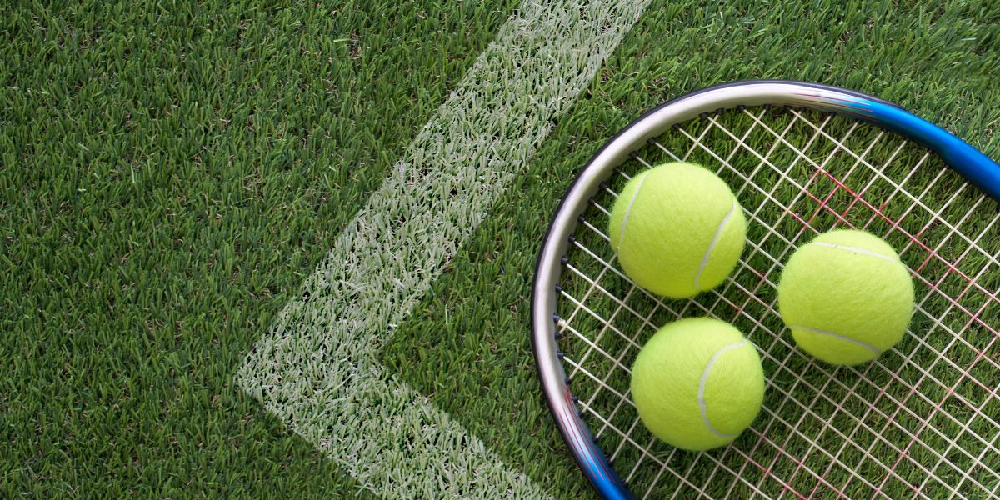

The game was originally a form of entertainment played by monks on ceremonial occasions. The game "jeu de Paume" was played by monks all over Europe in the 14th century. Over time, the sport spread and developed throughout Europe and beyond. In tennis, the term Grand Slam refers to the accomplishment of winning all four major championships-the championships of Australia, France, Britain (Wimbledon), and the United States-in the same calendar season. In this website we provide all the information about tennis which are new to tennis, and each player's score, an idea of how to play tennis, and the location for the matches. Tennis can be played for life because it is a low-impact, non-contact sport. This is a global sport. Tennis is played all over the world, in every country, and is now one of the most widely played sports in the world.